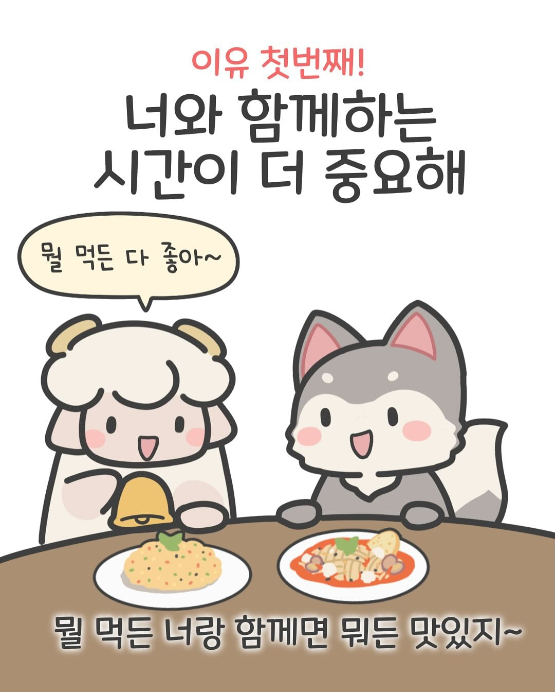
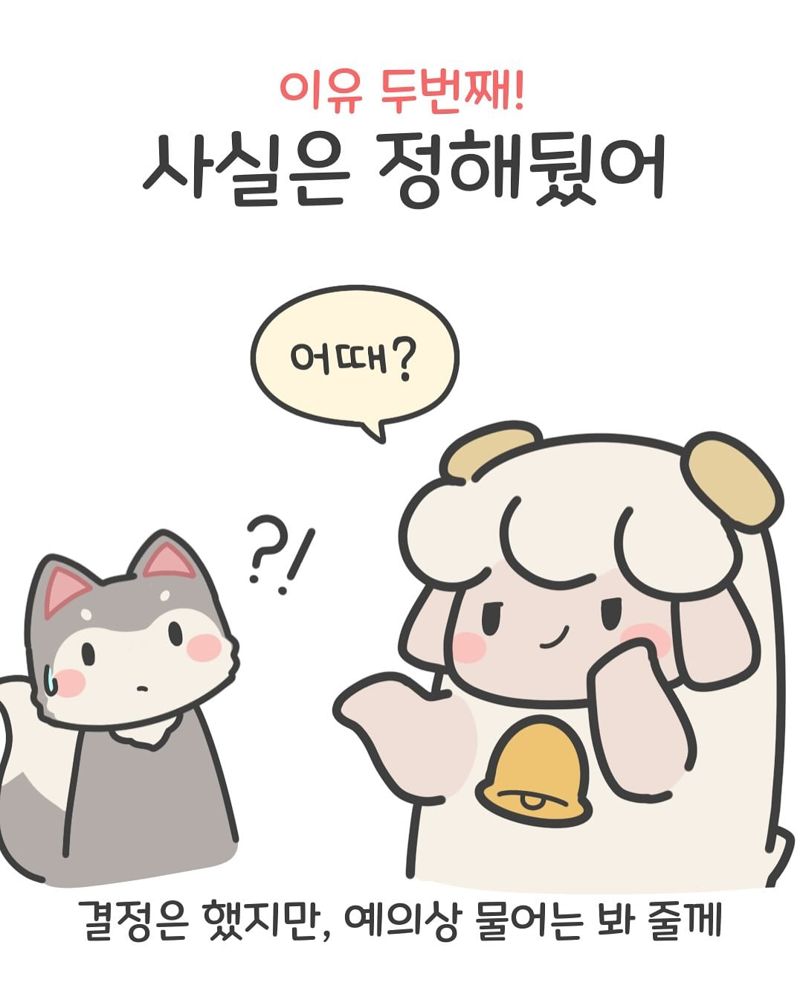
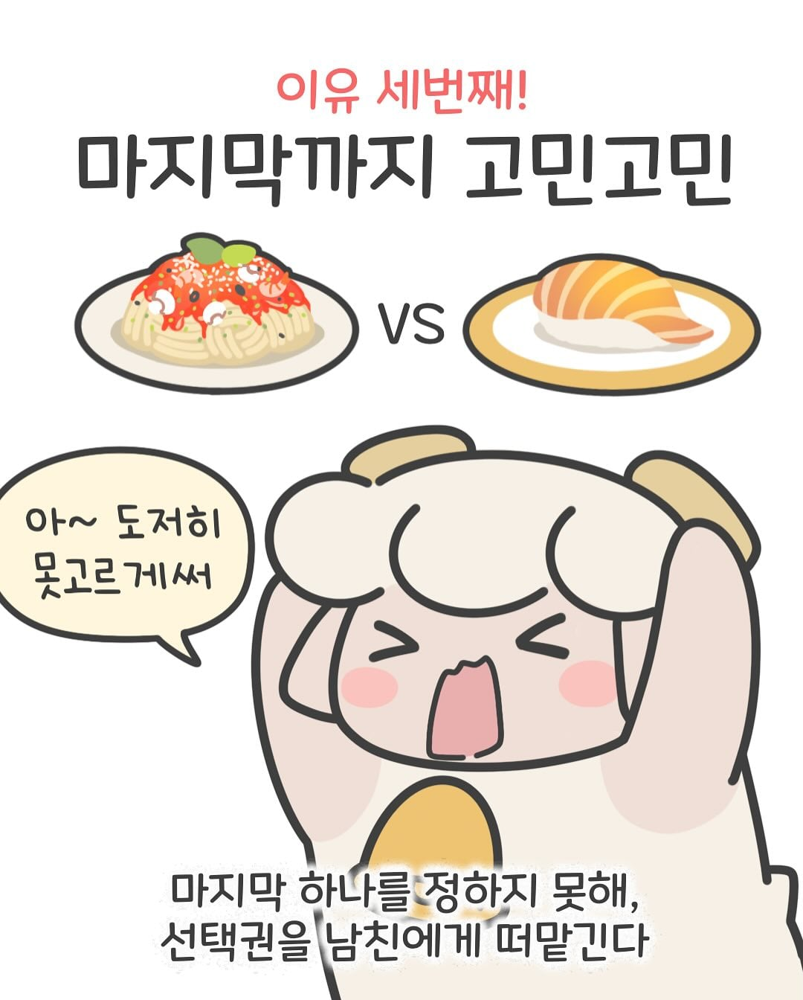
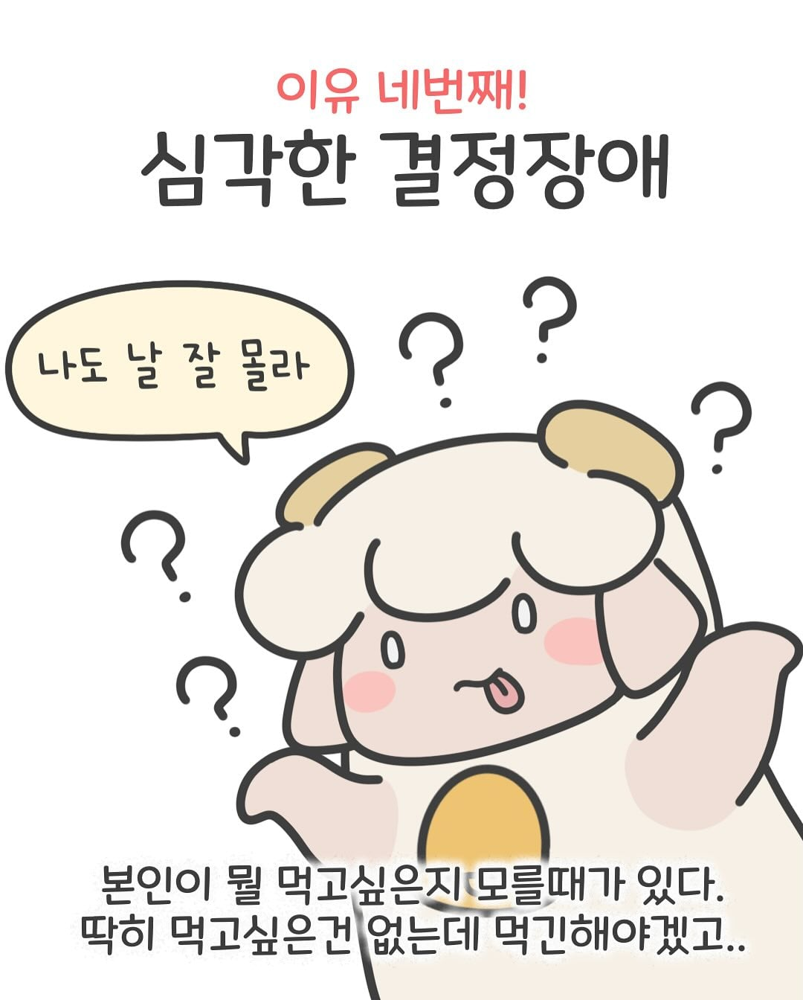
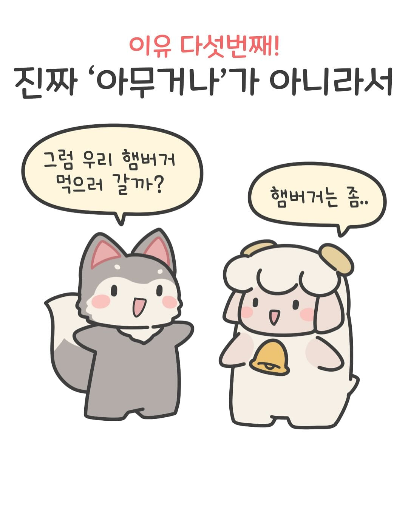
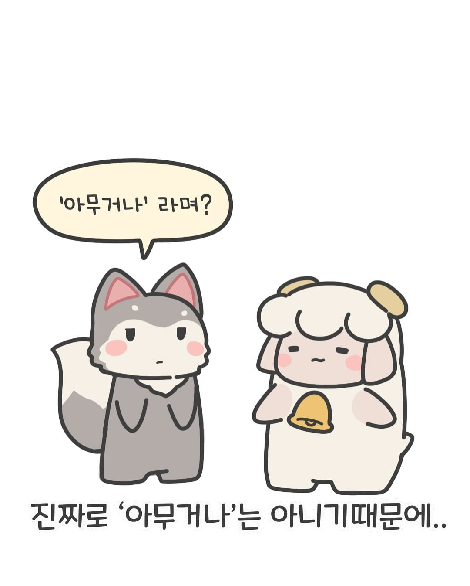

남사친들 만나서 뭐먹을래하면 맨날 아무거나 이러길래 내가 스시 진짜 세상에서 제일 좋아해서 항상 메뉴가 스시였음 진짜 만날 때마다 먹으러 가니까 딱 한번 스시 말고 제발 다른거 먹자해서 돈가스 먹은 적 있고 나머지는 그냥 순순히 가더라 이정도가 ㄹㅇ 아무거나인듯
초밥조아청년
여섯번째, 쳐맞고싶어서
저거 진돌 히디도 저랬어서
진돌이 아예 선언했다드만
"앞으로 아무거나라고 나한테 맡기면 난 피자다"
무조건 피자만 먹으러다녔더니 히디가 자기 의견을 냈는데 ㅋㅋ
히디가 마라탕에 맛들이기시작하자 그다음부턴 마라탕에 끌려다녓다고 ㅋㅋㅋ
보통 여자들이 울 때 어떠한 상황에 우는지 생각해보면 답 나옴
누가봐도 자기가 잘못했고 책임지는 상황에 오면 여자는 어리든 성인이든 눈물을 쉽게 흘림
그리고 여자가 눈물을 보이면 보통 압박 분위기가 풀림
본능적인거임 사소한것이라도 책임지는 포지션을 회피하는게 여자들의 본능이라고 난 생각한다
여자의 눈물을 믿지 말라는 말이 왜 예전부터 내려왔겠냐
진짜 반성하고 슬퍼서 우는게 아니라 본능적으로 우는거야 이 압박에서 벗어나려고
뇌헤엄
나도 아무거나했다가 따먹힌적있어서 그 이후부턴 메뉴 분명하게말함
지건
그냥 최면양파마냥 아무말 없이 햄버거가게 데려가기 시작하면 알아서 디저트까지 전날 공부해서 옴